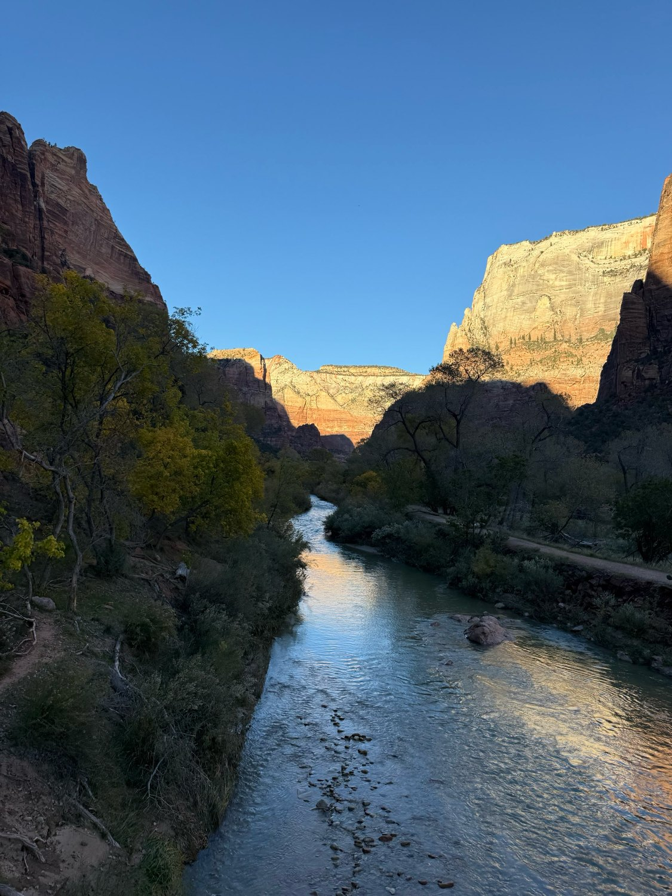
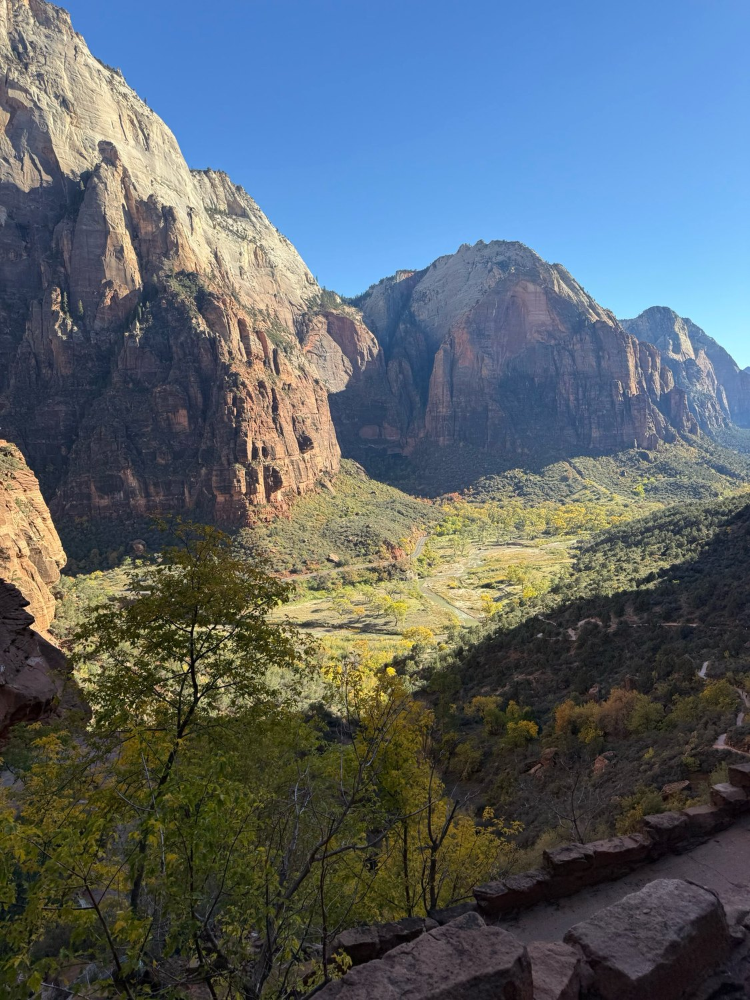
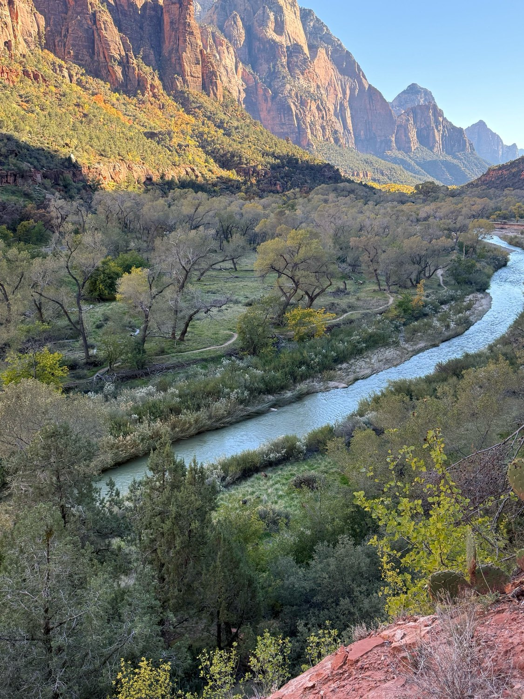

She’s the Goose
Autumn Letters · No. 19

We flew into Las Vegas for one of Rob’s work trips, and with a free day on our hands, we decided to drive to Zion National Park.
After a lovely dinner in Vegas the night before, we were up early and on the road to Utah. I had seen photographs of Zion, but nothing quite prepares you for it in person.
As we got closer, the landscape began to change. The mountains grew larger, and the rock shifted from red to orange to cream. I spent most of the drive with my face turned to the window.
Once inside the park, we caught the shuttle to the West Rim Trail, the path toward Angels Landing. We weren’t going all the way to the top, but we wanted to make the climb to Scout Lookout.
And what a climb it was.
The trail winds up the canyon wall in a series of steep switchbacks, including the famous Walter’s Wiggles. Every turn opened onto another view, and the higher we went, the better it got.

One of my favorite parts of the day was the bighorn sheep. They stood on the narrowest ledges as if it were nothing at all, moving easily across the rock while we picked our way carefully along the trail. I could have watched them all morning.
It was fall, and after the long climb up, the air at the top felt just right. Not hot, not cold. The kind of air that makes you want to stand still for a while.
And then there were the views.
The canyon fell away beneath us, the Virgin River winding through the valley and enormous rock formations rising on every side. The scale is hard to put into words. You can look at a hundred photographs of Zion, but standing among those walls is something else entirely.

I kept stopping, not because I needed a break, but because I wanted one more minute to take it in.
After we made our way back down, we headed for the Emerald Pools trails: winding paths, pools of water, sandstone cliffs all around. After a morning high above the canyon, it was lovely to see it all from below.
Deer wandered through the park, completely unbothered by the people passing by. There was something so peaceful about them, moving quietly against the backdrop of those mountains.
We spent the rest of the day hiking, taking photographs, and stopping whenever something caught our eye. Neither of us was in a hurry to leave. It was one of those afternoons you wish you could stretch a little longer.
Eventually, though, we had to head back to Las Vegas. Rob had work in the morning, and our little adventure had to fit into a single day.
On the drive back, I kept replaying it: the sheep high on the cliffs, the deer in the canyon, the view from the top of the trail.
What I loved most was that we hadn’t planned some elaborate vacation around Zion. We simply had a day together and chose to spend it somewhere beautiful.
It turned out to be one of my favorite days.
There are places you visit, enjoy, and move on from. And then there are places that stay with you long after you’ve left.
Zion is one of those.
I hope we get to go back someday.
“In his hand are the depths of the earth, and the mountain peaks belong to him. The sea is his, for he made it, and his hands formed the dry land.”
Psalm 95:4–5 (NIV)
Until next week,
Jessica
Letters from She’s the Goose
No noise, no selling — just the same quiet, delivered when it’s written.
Thank you — look for a note to confirm.